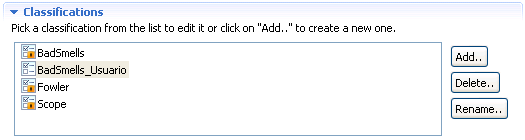
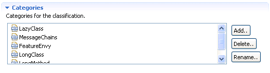

Creating a classificationCreating a classification
Creating a classificationCreating a classification
The normal process to create refactorings takes the following steps:
1. In the Classification's section, the user has to add a new classification buy clicking on the Add button. The name assigned to the new classification has to be different to the name's of the existing classifications.

2. In the Selected Classification's section the user has to specify the description for the classification and if it's going to be uni or multicategory.The description is a purely descriptive attribute. The fact that the classification is multi or unicategory is more functional since multicategory classifications allow refactorings that belong to more than one of it's categories while unicategory refactorings only allow refactorings that belong to zero or one of it's categories.
3. In the Categories's section the user has to add all the categories that the classification will be made of.

Sección de categorías de la clasificación